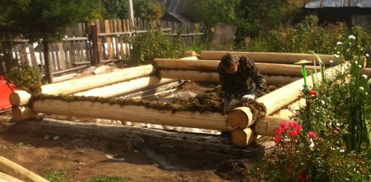

- Главная
- Cруб
- Выпиливание входной двери
- Двери
- Монтаж слива парной
- Основание первого уровня пола
- Обрешётка первого уровня пола
- Тепло и гидроизоляция в парной
- Основной пол в парной
- Окно в предбаннике
 Сборка сруба.
Сборка сруба.
Сборка сруба.
Сборка сруба.

Сперва, заказали сруб. Замерив готовый сруб, отрыли траншею под ленточный фундамент. Правильно сделали, что не начали копать замлю под фундамент не дождавшись подвоза сруба. Так как оказалось, что заданные параметры 6 на 4 метра оказались по внешней стороне сруба, а не по внутренней. Это могло привести к тому, что уже залитый фундамент мог оказаться шире самого сруба.
Ленточный фундамент копали на глубину 0,4м шириной 0,3м. Опалубку подняли на 0,3м выше уровня земли. Арматуру применили стеклопластиковую.
Она хорошо пилится. Легкая и её удобно неревозить в свёрнутом состоянии.
Установка первых брёвен сруба.
Важно не забыть гидроизоляцию между брёвнами и фундаментом.
У нас в виде двойного слоя рубероида.
Брёвна устанавливались на мох.
Проблему монтажа двух верхних рядов решили
применением талевой системы.
После поднятия одного конца бревна, его закрепляют верёвкой на верху.
А жердь с талевой системой перемещается на другой угол сруба.